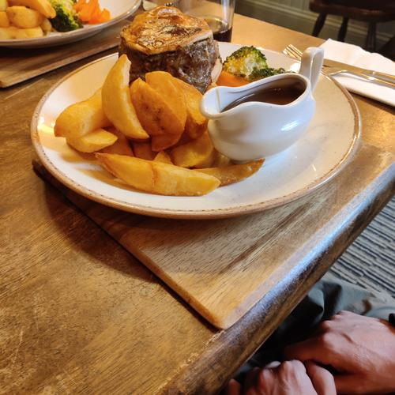

<!DOCTYPE html>
<html lang="en">
    <link rel="stylesheet" href="https://maxcdn.bootstrapcdn.com/bootstrap/3.3.7/css/bootstrap.min.css" integrity="sha384-BVYiiSIFeK1dGmJRAkycuHAHRg32OmUcww7on3RYdg4Va+PmSTsz/K68vbdEjh4u" crossorigin="anonymous"/>
    <!--Adds Bootstrap library -->
    <link rel="stylesheet" href="https://use.fontawesome.com/releases/v5.8.1/css/all.css" integrity="sha384-50oBUHEmvpQ+1lW4y57PTFmhCaXp0ML5d60M1M7uH2+nqUivzIebhndOJK28anvf" crossorigin="anonymous"></html>
    <!--Adds Fontawesome library-->
    
    <meta charset="UTF-8">
    <meta http-equiv="X-UA-Compatible" content="IE=edge">
    <meta name="viewport" content="width=device-width, initial-scale=1.0">
    <link rel="stylesheet" href="styles.css"> 
    <title>September 2023</title> -->

     -->
     <head>
        <meta charset="UTF-8">
        <meta http-equiv="X-UA-Compatible" content="IE=edge">
        <meta name="viewport" content="width=device-width, initial-scale=1.0">
        <link rel="stylesheet" href="styles.css"> 
        <title>September 2023</title>
     </head>

     <body>
        <body class="midnightblue">
            <button id="button" title="Click here to open dropdown menu" onclick="myFunction()"><span id="menuUnderline">Menu</span></button>
            <div id="myDiv">
                <ul>
                    <li><a class = "button" href = "index.html#button" title = "Click here to return to menu button "><span class="text">Menu:</span></a></li>
                    <li><a class = "About-us" href = "index.html#about_us" title = "Click here to find out more about us "><span class="text">About us</span></a></li>
                    <li><a class="Members" href = "index.html#Members" title = "Click here to go to find out more about the individual family members"><span class="text">Members</span></a></li>
                    <!-- <br>
                    <br> -->
                    <li><div class="text_left_align" >Choose month/event:</div></li>
                </ul>
                        <div id="menu">
                            <ul>
                                    <li><a class="nav-link" href = "April_2023.html"  title = "Click here to go to April 2023 blogs">April 2023</a></li>
                                    <li><a class="nav-link" href = "May_2023.html"  title = "Click here to go to May 2023 blogs">May 2023</a></li>
                                    <li><a class="nav-link" href = "June_2023.html" id="menu" title = "Click here to go to June 2023 blogs">June 2023</a></li>
                                    <li><a class="nav-link" href = "Auvergne_holiday.html" id="menu" title = "Click here to go to Auvergne holiday, June 2023">Auvergne holiday</a></li>
                                    <li><a class="nav-link" href = "July_2023.html" id="menu" title = "Click here to go to July 2023 blogs">July 2023</a></li>
                                    <li><a class="nav-link" href = "August_2023.html" id="menu" title = "Click here to go to August 2023 blogs">August 2023</a></li>
                                    <li><a class="nav-link" href = "September_2023.html" id="menu" title = "Click here to go to September 2023 blogs">September 2023</a></li>
                            </ul>
                        </div>
           
                        <script>
                            function myFunction() {
                            var x = document.getElementById("myDiv");
                            if (x.style.visibility === 'hidden') {
                                x.style.visibility = 'visible';
                            } else {
                                x.style.visibility = 'hidden';
                            }
                            }        
                        </script>
                </div>
          
            <h1 class="autumnal">
                <div id="leaves">
  <i></i>
  <i></i>
  <i></i>
  <i></i>
  <i></i>
  <i></i>
  <i></i>
  <i></i>
  <i></i>
  <i></i>
  <i></i>
  <i></i>
  <i></i>
  <i></i>
  <i></i> 
</div>
        September 2023</h1>

            <div class="blogDiv">
                <div class="datenewsDiv">
                    <section class = "date">Saturday, September 2nd, 2023</section>
                    <section class = "news"><strong color="white">Harry and Elena arrive from Cardiff</strong> 
                        <br>
                    Harry and Elena arrived from Cardiff today, Elena returning from her week's holiday with Harry down there and Harry home to Cumbria 
                    for the first time since Easter. Lennie had been forewarned and was hanging around the garden in (sort of...)
                    anticipation...or so we like to think. Harry brought the first good weather for a month and it was a lovely evening so a barbecue in the garden was planned
                    and everyone had a great time. Bernard has been busy cutting back the beech hedge, which is an annual task, so there were good views over the tarn (hence the ladder in the background).
                    <br>
                    <br>
                    </section>
                </div>          

                 <div class="blogPhotoDiv">
                    <fig><section class = "blogPhoto" ><figcaption><strong style="color:black;">Bernard explaining to Elena <br> how to work the gas barbecue <br> ready for when she buys her own</strong></figcaption></section>
                    </fig>                
                    <fig><section class = "blogPhoto" ><figcaption><strong style="color:black;">Lennie making the most <br> of the afternoon sun and enjoying <br> having everyone back home</strong></figcaption></section>
                    </fig>
                    <fig><section class = "blogPhoto" ><figcaption><strong style="color:black;">Elena and Harry, <br> awaiting the barbecue in the sun</strong></figcaption></section>
                    </fig>
                </div>  

                 <div class="blogPhotoDiv">
                    <fig><section class = "blogPhoto" ><figcaption><strong style="color:black;">And Lennie coming to join in, <br> waiting for his portion ... </strong></figcaption></section>
                    </fig>
                    <fig><section class = "blogPhoto" > relaxing enjoying <br> the lovely evening"><figcaption><strong style="color:black;">Bernard, Elena and Harry relaxing <br> enjoying the lovely evening</strong></figcaption></section>
                    </fig> 
                    <fig><section class = "blogPhoto" ><figcaption><strong style="color:black;">And a beautiful sunset...</strong></figcaption></section>
                    </fig>
                </div> 

                <div class="blogDiv">
                    <div class="datenewsDiv">
                        <section class = "date">Sunday, September 3rd, 2023</section>
                        <section class = "news"><strong color="white">Trial of the waffle-maker.</strong> 
                            <br>
                        Bernard had been given an unused waffle-maker by his dad which brought back memories of our 2017 inter-railing trip when
                        we stayed in a hotel in Stockholm, Sweden and at breakfasts there was a waffle-maker people could use. Bernard got so good
                        at it that some of the other guests thought he was a member of staff and he ended up helping those who were struggling by making their waffles for them!!! Needless
                        to say, the waffles proved very popular.
                        <br>
                        <br>
                        </section>
                    </div>

                     <div class="blogPhotoDiv">
                        <fig><section class = "blogPhoto" ><figcaption><strong style="color:black;">Perfectly-formed waffle</strong></figcaption></section>
                        </fig> 
                        <fig><section class = "blogPhoto" ><figcaption><strong style="color:black;">Waffle quality control</strong></figcaption></section>
                        </fig>
                        <fig><section class = "blogPhoto" ><figcaption><strong style="color:black;">A happy waffle customer...</strong></figcaption></section>
                        </fig>
                    </div> 

                    <div class="blogDiv">
                        <div class="datenewsDiv">
                            <section class = "date">Wednesday, September 3rd, 2023</section>
                            <section class = "news"><strong color="white">Lennie misbehaving</strong> 
                                        <br>
                            Meanwhile, Lennie has been misbehaving .......a lot. We think he must have heatstroke. There is no other way of accounting for the fact he has turned into 
                            a crazy cat...
                                  <br>
                            </section>
                        </div>
    
                        <div class="blogPhotoDiv">
                            <fig><section class = "blogPhoto" ><figcaption><strong style="color:black;">Lennie jumps on the table <br> something he never does normally</strong></figcaption></section>
                            </fig>
                            <fig><section class = "blogPhoto" ><figcaption><strong style="color:black;">Lennie trying to help himself <br> to milk from the jug</strong></figcaption></section>
                            </fig> 
                            <fig><section class = "blogPhoto" ><figcaption><strong style="color:black;">And finally, in order to really get attention <br> Lennie taking his place as a family <br> member at the dinner table</strong></figcaption></section>
                            </fig>
                            <fig><section class = "blogPhoto" ><figcaption><strong style="color:black;">Yet again, another lovely sunset</strong></figcaption></section>
                            </fig>
                        </div>  

                <div class="blogDiv">
                    <div class="datenewsDiv">
                        <section class = "date">Monday, September 4th, 2023 -  Thursday, September 7th</section>
                        <section class = "news"><strong color="white">Start of September heatwave</strong> 
                                <br>
                        A very warm spell of weather at last, which we had been waiting for all through August. So it was time to open the bifold doors and enjoy the 
                        outdoors. On Tuesday evening we drove down to see Elena in her new house as Harry had never been inside and took the opportunity to go out for a walk and 
                        to the local pub. Bernard meanwhile is yet again adding to our excess kitchen gadgetry by also bringing back a toastie-
                        maker from his parents which he has been trialing with at least an aim to make things slightly healthier by using reduced fat cheese and brown bread! 
                            <br>
                            <br>
                        </section>
                    </div>

                    <div class="blogPhotoDiv">
                        <fig><section class = "blogPhoto" ><figcaption><strong style="color:black;">Harry and Lennie co-conspirators on the couch</strong></figcaption></section>
                        </fig>  
                        <fig><section class = "blogPhoto" ><figcaption><strong style="color:black;">Ham and cheese toastie</strong></figcaption></section>
                        </fig>
                        <fig><section class = "blogPhoto" ><figcaption><strong style="color:black;">Lennie taking shelter from the heat</strong></figcaption></section>
                        </fig>
                        <fig><section class = "blogPhoto" ><figcaption><strong style="color:black;">Elena & Harry enjoying the evening at the Cross Keys Inn</strong></figcaption></section>
                        </fig>
                    </div>  

                <div class="blogDiv">
                    <div class="datenewsDiv">
                        <section class = "date">Thursday, September 7th, 2023</section>
                        <section class = "news"><strong color="white">Pie night at the Fetherston Arms</strong> 
                                <br>
                        Every Thursday night at the Fetherston arms is 'pie night' at the <a href="http://fetherston-arms.co.uk/" title="Click here to discover more about the Fetherston Arms" target="_blank">Fetherston Arms</a>. 
                        So to celebrate Harry's return on holiday the mandatory trip to Fetherston arms had been arranged. There is a large range of pies on a Thursday. Everyone tonight though chose the venison pie with thyme.
                        and all of them are beautifully cooked.
                                <br>
                        </section>
                    </div>

                    <div class="blogPhotoDiv">
                        <fig><section class = "blogPhoto" ><figcaption><strong style="color:black;">Fetherston Arms</strong></figcaption></section>
                        </fig> 
                        <fig><section class = "blogPhoto" ><figcaption><strong style="color:black;">Pie Night Menu</strong></figcaption></section>
                        </fig>
                        <fig><section class = "blogPhoto" ><figcaption><strong style="color:black;">Jill, Elena and Harry awaiting dinner, Fetherston Arms</strong></figcaption></section>
                        </fig>
                        <fig><section class = "blogPhoto" ><figcaption><strong style="color:black;">Jill's venison pie - healthy version - with extra vegetables and no chips</strong></figcaption></section>
                        </fig>
                    </div> 

                    <div class="blogPhotoDiv">
                        <fig><section class = "blogPhoto" ><figcaption><strong style="color:black;">Harry's venison pie-the not so healthy version- with chips</strong></figcaption></section>
                        </fig>
                        <fig><section class = "blogPhoto" ><figcaption><strong style="color:black;">Harry's chocolate brownie and ice cream dessert</strong></figcaption></section>
                        </fig>
                        <fig><section class = "blogPhoto" ><figcaption><strong style="color:black;">Elena's chocolate fondant dessert</strong></figcaption></section>
                        </fig>
                    </div> 
                </div>

                

                <div class="blogDiv">
                    <div class="datenewsDiv">
                        <section class = "date">Saturday, September 9th, 2023</section>
                        <section class = "news"><strong color="white">Harry's early birthday celebration</strong> 
                                        <br>
                                        It was agreed by all to Have Harry's birthday dinner whilst he was in Cumbria rather than when he returned to Cardiff and so everyone set to to cook this years menu.
                                        <ul>
                                            <li>Main Course: Homemade fish pie</li>
                                            <li>Dessert: Homemade blackberry and apple pie and custard</li>
                                            <li>Followed by: Chocolate Birthday Cake</li>
                                        </ul>

                                        Then it was decided that was too.... much and so the chocolate birthday cake took pride of place as dessert and the homemade blackberry and apple pie and custard 
                                        was postponed until the following day.
                                        <br>
                                        <br>
                                    </section>
                    </div>

                    <div class="blogPhotoDiv">

                        <fig><section class = "blogPhoto" ><figcaption><strong style="color:black;">Main course-Fish Pie</strong></figcaption></section>
                        </fig>                
                        <fig><section class = "blogPhoto" ><figcaption><strong style="color:black;">Fish pie dinner</strong></figcaption></section>
                        </fig>
                        <fig><section class = "blogPhoto" ><figcaption><strong style="color:black;">Chocolate birthday cake mixture</strong></figcaption></section>
                        </fig>
                        <fig><section class = "blogPhoto" ><figcaption><strong style="color:black;">Harry's birthday cake</strong></figcaption></section>
                        </fig>
                    </div>  
                    
                    <div class="blogPhotoDiv">
                        <fig><section class = "blogPhoto" ><figcaption><strong style="color:black;">Blackberry and apple pie ready to go in the oven</strong></figcaption></section>
                        </fig>
                        <fig><section class = "blogPhoto" ><figcaption><strong style="color:black;">Completed blackberry and apple pie</strong></figcaption></section>
                        </fig> 
                        <fig><section class = "blogPhoto" ><figcaption><strong style="color:black;">Slice of the blackberyy and apple pie with custard</strong></figcaption></section>
                        </fig>
                        <fig><section class = "blogPhoto" ><figcaption><strong style="color:black;"></strong></figcaption></section>
                        </fig>
                    </div> 
                </div>

            </div>

            <div class="blogDiv">
                    <div class="datenewsDiv">
                        <section class = "date">Saturday, September 16th, 2023</section>
                        <section class = "news"><strong color="white">Newcastle Trip (including the trail of Shaun the Sheep on the Tyne)</strong> 
                                        <br>
                                        Harry returned with Bernard to Cardiff today after a very enjoyable stay for us all in Cumbria for the past 2 weeks.
                                        So, the rest of the team decided to take the opportunity to go shopping in Newcastle city centre for the day.
                                        The bookshops took priority as there is a very interesting <a href="https://blackwells.co.uk/bookshop/home" title="Click here to discover more about Blackwell's in Newcastle" target="_blank">Blackwell's</a> bookshop near the university 
                                        and <a href="https://www.waterstones.com/bookshops/newcastle-emerson-ch" title="Click here to discover more about Waterstones, Newcastle" target="_blank">Waterstone's</a>  bookshop at Emerson Chambers on Blackett Street in town.
                                        <br>
                                        <br>
                                        En route to the various clothes shops, we picked up the trail of <a href="https://www.shaunonthetyne.co.uk/" title="Click here to find out more about Shaun the Sheep on the Tyne " target="_blank">Shaun the Sheep on the Tyne</a>
                                        , a free public art display running until 24th September 2023  and which is presented by and raising funds for <a href="https://www.stoswaldsuk.org/" title="Click here to find out more about St Oswald's Hospice" target="_blank">St Oswald's Hospice</a>   
                                        After the clothes shops (all very expensive!), it was on to lunch at the <a href="https://www.frenchquarternewcastle.co.uk/" title="Click here to find out more about the French Quarter Restaurant" target="_blank">French Quarter</a> restaurant,
                                        with a brief stop undercover in the arched entrance of the Castle in order to shelter from the rain. There was not time to visit on this occasion,
                                        but it has been listed as a future trip as it can be combined with an interesting 3 mile walk around the castle walls.
                                        <br>
                                        <br>
                                        After lunch, it was a little more clothes shopping and then on home.
                        </section>
                    </div>

                    <div class="blogPhotoDiv">
                        <fig><section class = "blogPhoto" ><figcaption><strong style="color:black;">A reminder of our multiple past <br> visits to Newcastle University</strong></figcaption></section>
                        </fig> 
                        <fig><section class = "blogPhoto" ><figcaption><strong style="color:black;">Newcastle Cathedral</strong></figcaption></section>
                        </fig>
                        <fig><section class = "blogPhoto" ><figcaption><strong style="color:black;">Newcastle Cathedral 'Purple Reign' Shaun the Sheep in close-up</strong></figcaption></section>
                        </fig>
                        <fig><section class = "blogPhoto" ><figcaption><strong style="color:black;">On past Newcastle Castle entrance, <br> 
                            with a brief stop  undercover <br> in the archway to shelter from the rain!</strong></figcaption></section>
                        </fig>
                    </div> 

                    <div class="blogPhotoDiv">
                        <fig><section class = "blogPhoto" ><figcaption><strong style="color:black;">A lovely lunch at French Quarter restaurant</strong></figcaption></section>
                        </fig> 
                        <fig><section class = "blogPhoto" ><figcaption><strong style="color:black;"> Lentil ragout, ratatouille and haricot verts</strong></figcaption></section>
                        </fig>
                        <fig><section class = "blogPhoto" ><figcaption><strong style="color:black;">Jill and lunch at the restaurant</strong></figcaption></section>
                        </fig>
                        <fig><section class = "blogPhoto" ><figcaption><strong style="color:black;">Elena and the all important <br> chocolate mousse dessert </strong></figcaption></section>
                        </fig>
                    </div> 

                    <div class="blogPhotoDiv">
                        <fig><section class = "blogPhoto" ><figcaption><strong style="color:black;">Looking down the waterfront <br> towards the Baltic Centre <br> 
                        and the Millenium Bridge</strong></figcaption></section>
                        </fig> 
                        <fig><section class = "blogPhoto" ><figcaption><strong style="color:black;">High Level Bridge</strong></figcaption></section>
                        </fig>
                        <fig><section class = "blogPhoto" ><figcaption><strong style="color:black;">'Baa Baa Blue' Shaun outside the Theatre Royal</strong></figcaption></section>
                        </fig>
                        <fig><section class = "blogPhoto" ><figcaption><strong style="color:black;">Grey's Monument <br> at top of Grey Street</strong></figcaption></section>
                        </fig>
                    </div> 
            </div>

            <div class="blogDiv">
              <div class="datenewsDiv">
                  <section class = "date">Sunday, September 17th, 2023</section>
                  <section class = "news"><strong color="white">Trip to Birdoswald Roman Fort and learning how to script a slideshow </strong> 
                          <br>
                 Trip to visit Birdoswald Roman Fort today, which is owned and run by English Heritage. We had not visited since before the pandemic and 
                 the improvements of the past few years. The displays are now much more interactive and were well done and the fort seems to be doing well
                 as there were lots of visitors there today.Then we walked some of the Hadrian's Wall path before returning to the fort .
                          <br>
                          <br>
                  Also, progress is being made with HTML, CSS and javascript and for the first time, the images can be displayed in a slideshow format as demonstrated below.
                  </section>
              </div>
          </div>

          <div class="slideshow-container">
          <style>
              body {
                margin: 0;
              }
              
              * {
                box-sizing: border-box;
              }
              
              img {
                vertical-align: middle;
                margin-right:75vw;
                margin-left:25vw;
                width:auto;
                height:auto;
                border:solid #757c88 4px;
                margin-top:2%;
                margin-bottom:2%;
              }

              .row{
                width:55vw;
                height:auto;
              }

              /* Position the image container (needed to position the left and right arrows) */
              .container {
                position: relative;
                background-color:#7FFFD4;
                border:grey 4px;
              }
              
              /* Hide the images by default */
              .mySlides {
                display: none;
              }
              
              /* Add a pointer when hovering over the thumbnail images */
              .cursor {
                cursor: pointer;
              }
              
              /* Next & previous buttons */
              .prev,
              .next {
                cursor: pointer;
                position: absolute;
                top: 40%;
                width: auto;
                padding: 16px;
                margin-top: -50px;
                color: grey;
                /* font-weight: bold; */
                font-size: 30px;
                border-radius: 0 3px 3px 0;
                user-select: none;
                -webkit-user-select: none;
              }
              
              /* Position the "next button" to the right */
              .next {
                right: 0;
                border-radius: 3px 0 0 3px;
              }
              
              /* On hover, add a black background color with a little bit see-through */
              .prev:hover,
              .next:hover {
                background-color: rgba(0, 0, 0, 0.8);
              }
              
              /* Number text (1/3 etc) */
              .numbertext {
                color: grey;
                font-weight: bold;
                font-size: 12px;
                padding: 8px 12px;
                position: absolute;
                top: 0;
              }
              
              /* Container for image text */
              .caption-container {
                text-align: center;
                /* background-color: #222;
                padding: 2px 16px; */
                color: white;
              }
              
              .row:after {
                content: "";
                display: table;
                clear: both;
              }
              
              /* Six columns side by side */
              .column {
                float: left;
                width: 16.66%;
              }
              
              /* Add a transparency effect for thumnbail images */
              .demo {
                opacity: 0.6;
              }
              
              .active,
              .demo:hover {
                opacity: 1;
              }

              @media screen and (max-width: 600px) {
  img {
    display:block;
    align-content: center;
    justify-content: center;
    width:50%;
    height:auto;
  }

  .row{
    width:55vw;
    height:auto;
    margin-bottom: 20px;
    
  }
}

              @media screen and (max-width: 900px){
  img {
    display:block;
    align-content: center;
    justify-content: center;
    width:50%;
    height:auto;
  } 

  .row{
    width:55vw;
    height:auto;
    margin-bottom:20px;
  }
}

              </style>
              
              
              <h2 style="text-align:center; font-size:large;font-weight:bold;">Birdoswald Visit</h2>
              
              <div class="container">
                <div class="mySlides">
                  <div class="numbertext">1 / 6</div>
                  
                  <figcaption style="text-align: center; margin-bottom: 20px;"><strong style="color:black;" >Elena about to go investigating <br> Birdoswald Roman Fort</strong></figcaption>
                </div>
              
                <div class="mySlides
                ">
                  <div class="numbertext">2 / 6</div>
                  
                  <figcaption style="text-align: center; margin-bottom: 20px;"><strong style="color:black;" >The Farmhouse at Birdoswald</strong></figcaption>
                </div>
              
                <div class="mySlides">
                  <div class="numbertext">3 / 6</div>
                  
                  <figcaption style="text-align: center; margin-bottom: 20px;"><strong style="color:black;" >Turret 49b-Hadrian's Wall</strong></figcaption>
                </div>
                  
                <div class="mySlides">
                  <div class="numbertext">4 / 6</div>
                  
                  <figcaption style="text-align: center; margin-bottom: 20px;"><strong style="color:black;" >On the Hadrian's Wall Path</strong></figcaption>
                </div>
              
                <div class="mySlides">
                  <div class="numbertext">5 / 6</div>
                  
                  <figcaption style="text-align: center; margin-bottom: 20px;"><strong style="color:black;" >Birdowald Fort <br> looking towards Whin Sill</strong></figcaption>
                </div>
                  
                <div class="mySlides">
                  <div class="numbertext">6 / 6</div>
                  
                  <figcaption style="text-align: center; margin-bottom: 20px;"><strong style="color:black;" >And the Whin Sill in close up</strong></figcaption>
                </div>
                  
                <a class="prev" onclick="plusSlides(-1)">❮</a>
                <a class="next" onclick="plusSlides(1)">❯</a>
              
              
                <div class="row">
                  <div class="column">
                    
                  </div>
                  <div class="column">
                    
                  </div>
                  <div class="column">
                    
                  </div>
                  <div class="column">
                    
                  </div>
                  <div class="column">
                    
                  </div>    
                  <div class="column">
                    
                  </div>
                </div>
              <!-- </div> -->
              
              <script>
              let slideIndex = 1;
              showSlides(slideIndex);
              
              function plusSlides(n) {
                showSlides(slideIndex += n);
              }
              
              function currentSlide(n) {
                showSlides(slideIndex = n);
              }
              
              function showSlides(n) {
                let i;
                let slides = document.getElementsByClassName("mySlides");
                let dots = document.getElementsByClassName("demo");
                let captionText = document.getElementById("caption");
                if (n > slides.length) {slideIndex = 1}
                if (n < 1) {slideIndex = slides.length}
                for (i = 0; i < slides.length; i++) {
                  slides[i].style.display = "none";
                }
                for (i = 0; i < dots.length; i++) {
                  dots[i].className = dots[i].className.replace(" active", "");
                }
                slides[slideIndex-1].style.display = "block";
                dots[slideIndex-1].className += " active";
                captionText.innerHTML = dots[slideIndex-1].alt;
              }
              </script>
              </div>

            
                    
                </body>
                
                
            
            </html>
       